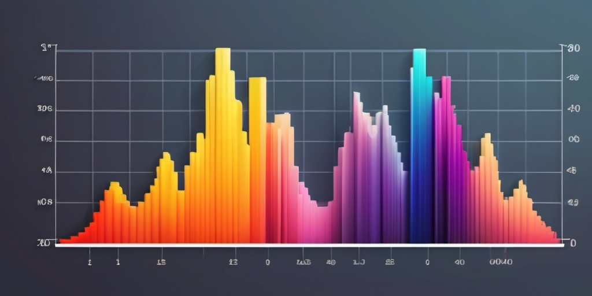
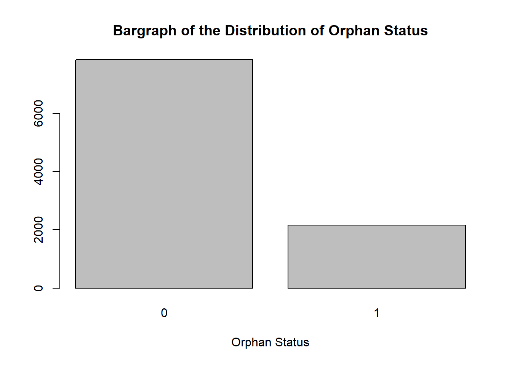

Code
set.seed(44)
barplot(table(sample(1:5, 1000, replace = TRUE)), xlab = "Bands", main = "Histogram of Bands (Almost Uniform)")

Simulation is a scientific process of creating an hypothetical situation that mirrors the real world phenomenon. In this article, we shall explore a few ways of generating hypothetical variables that closely resemble the data that may, for instance, be collected in a field survey. You may have asked yourself how a researcher would go about generating age values for a population without actually asking the respondents in a sample of a given population to fill a survey questionnaire asking for their ages. So, this is how.
Different variables require different approaches of simulation, because of the underlying probability distribution. Simply put, a probability distribution defines the pattern to which the values of a variable conform. There is always a pattern that values follow, and for us to generate (simulate) the values for a variable, we are required to know what is pattern is like in advance. This prior knowledge of the characteristics of the pattern is known as apriori, because we know it in advance. This knowledge is largely extracted from literature. For example, if we want to simulate 100 age values in a population of epileptics, we need to ask these two questions:
What is the usual pattern of age like for the general population? We can use a histogram to get a hint of the underlying probability distribution for age. If the histogram reveals a bell-shaped pattern, we can roughly consider the normal distribution as the underlying probability distribution. There are many other probability distributions, and normal distribution is just one of them, which also happens to be the most common for numerical variables in the field of real numbers (x ∈ ℝ).
What is the mean and standard deviation of the age of epileptics? The answer will allow us to reproduce the histogram in (2) above without going to the field to collect actual age data. Here, mean and standard deviation are the only parameters whose apriori values ae required.
In this article, we shall simulate variables whose values mirror the data for the means testing instrument (MTI) used by the Government of Kenya to place university students into 5 bands for award of scholarships. This follows from my earlier article on using artificial intelligence as a more reliable alternative to the new MTI-based university funding model in Kenya.
The data is simulated, and therefore substantially differs with the actual scenario! The data is for learning purposes only, and the statistical estimates reported MUST NOT be taken as true reflection of the real-word situation.
There are a number of factors1 that the new MTI-based university funding model in Kenya considers for placement of students into the 5 bands. We shall discuss each one of them and deduce the probable underlying probability distributions and their associated parametric values that will enable us to simulate these factors. We shall simulate the data for 1000 students, thus x_i where i = 1, 2, 3, ..., 1000. Because the values are randomly generated, we shall seed the random number generator (RNG), for reproducibility purposes, with the arbitrary value of 44. Note that there is no real reason for this choice.
This is the outcome – a categorical 5-point ordinal variable where 1 represents the most needy and 5 represents the least needy2, thus x_{ij} where j = \{1, 2, 3, ..., 5\}. We will assume that each band has a fairly equal chance of occurring, i.e for the i^{th} student, p(x_{i}) = 1/2. We need a probability distribution function that draws 5 numbers between 1 to 5 for 1000 observations. We could use the sample function from {base} R package but the distribution of values would not be desirably skewed towards the left – it would lead to a near-uniform distribution. Remember that bands are a proxy for the socio-economic status of the household, and in Kenya – as in most other countries3 – the number of rich households is significantly lower than the number of poor households, therefore we need to expect more band 1 households than band 5 households.
set.seed(44)
barplot(table(sample(1:5, 1000, replace = TRUE)), xlab = "Bands", main = "Histogram of Bands (Almost Uniform)")
The function rbinom from the package {stats} does exactly that – we simply need to specify n = 1000, size = 5, and prob = 1/5 in the arguments and add 1 to the result to remove 0 and introduce 5. The resulting values assume a binomial distribution (p(x) = (_x^n)p^xq^{n-x}) with 5 trials for each observation, and the resulting value between 1 and 5 (inclusive) indicate a success for the j^{th} trial. Finally, declare x as an ordered factor.
set.seed(44)
barplot(table(rbinom(n = 1000,size = 5, prob = 1/5) + 1), xlab = "Bands", main = "Histogram of Bands (Appropriately Positively Skewed)")
Income, as with bands, is expected to be a positively skewed real-valued number (x ∈ ℝ^+) which can assume the negative binomial distribution with the mean of KES 20,0004. From this knowledge we can generate 1000 income values using rnbinom function from the package {stats} as shown in the code below;
set.seed(44)
hist(rnbinom(n = 1000, size = 5, mu = 20000), xlab = "Income", main = "Histogram of Gross Family Income")
We will take all the 47 counties as the distinct geographical locations from which a student is equally likely to come – although realistically, certain counties have a relatively bigger share of student population, but for simplicity, we shall ignore this fact. With that out of the way, the appropriate probability distribution that ensures each student is allocated equal probability of being drawn from any of the 47 counties is the discrete uniform distribution. We can then simulate this variable using the function runif from the package {stats} as follows;
set.seed(44)
barplot(table(ceiling(runif(n = 1000, min = 1, max = 47))), xlab = "Geographical Location", main = "Discrete Uniform Distribution of Geographical Location")
We shall treat this as x \sim N(\mu, s) which is in the field x ∈ ℝ^+. This is the so-called normal distribution, and both \mu and s are the mean and standard deviation apriori parameters. The probability density function itself is written as f(x) = \frac{1}{\sigma \sqrt(2 \pi)}e^{\frac{-1}{2}(\frac{x-\mu}{\sigma})^2}. According to the PPI tool, the mean index poverty for Kenya is approximately 0.3 and the standard deviation is approximately 0.2. With this apriori knowledge, we can plug the values into the rnorm function in the package {stats} as follows;
set.seed(44)
hist(abs(rnorm(n = 1000, mean = 0.3, sd = 0.2)), xlab = "Poverty Probability Index", main = "Normal Distribution of Poverty Probability Index")
This is a binary variable which indicates whether a student is an orphan or not, and therefore follows a binomial distribution with one trial (also called Bernoulli). We require the probability (rate/prevalence) of the status of being an orphan in Kenya for us to simulate the data for this variable. According to Lee et al. (2014), 22.2% of children aged 15 to 17 were orphans and vulnerable (OVC). Students joining university are mostly aged 17 to 20 years. We shall therefore use the rate of 0.222 to simulate this variable as shown below;
set.seed(44)
barplot(table(rbinom(n = 1000, size = 1, prob = 0.222)), xlab = "Orphan Status", main = "Bargraph of the Distribution of Orphan Status")
This is yet another binary variable which indicates whether a student has disability or does not, and therefore follows a binomial distribution with one trial. We shall use the rate of 2.2%5. Plugging this value in the rbinom formula, we get;
set.seed(44)
barplot(table(rbinom(n = 1000, size = 1, prob = 0.022)), xlab = "Disability Status", main = "Bargraph of the Distribution of Disability Status")The variable represents counts, and therefore x ∈ ℕ^+. Both Poisson and negative binomial distributions could model the variable effectively, but this time round we shall focus on the former. The probability mass function for Poisson distribution is given as f(x) = \frac{e^{–λ} λ^x}{x!} where λ is the parameter representing the average number of occurrences of a Poisson event per unit space or time. In this context, it is the number of dependents per household. We shall use 4 as the value for this parameter6 and plug into the function rpois in the package {stats} as follows;
set.seed(44)
barplot(table(rpois(n = 1000, lambda = 4)), xlab = "Number of Dependents", main = "Bargraph of the Distribution of Number of Dependents")
Similar to Section 2.4, this variable is in the field x ∈ ℝ^+ where x \sim N(\mu, s) with parameters taken to be \mu = 500,000 and sd = 50,000. Feeding these values into the normal distribution RNG, we get;
set.seed(44)
hist(abs(rnorm(n = 1000, mean = 500000, sd = 50000)), xlab = "Program Costs", main = "Histogram of Distribution of Program Costs (KES)")
Similar to Section 2.1,this variable follows a binomial distribution with 3 trials; male (49.0%), female (50.0%), and intersex (0.01%)7. Because of the small number of observations for the third category, we shall limit the trials to just 2 and and add 1 to the result to remove 0 and introduce 3.
set.seed(44)
barplot(table(rbinom(n = 1000, size = 2, prob = 1/3) + 1), xlab = "Gender", main = "Bargraph of Gender")We shall use the following R packages (installed from CRAN) to simulate our variables;
# load packages
library(here)
library(tidyverse)Now, let’s combine all the simulated data according to probability distributions and their associated parameters identified and considered in Section 2 into a data-frame. Notice that bands, gross family income, and PPI are sorted to ensure that households in lower bands (band 1) are correspondingly assigned lower gross income and higher PPI. The higher the PPI, the higher the likelihood that a household is considered poor. The rest of the variables must not be sorted.
# table display setup
#| label: tbl-simulated_data .striped .hover .primary .bordered
#| tbl-cap: "Simulated data"
#| tbl-cap-location: bottom
# for reproducibility
set.seed(44)
simulated_data <- data.frame(
# sorting is necessary
Bands = sort(as.ordered(rbinom(n = 1000,
size = 5,
prob = 1/5) + 1), decreasing = FALSE),
# sorting is necessary
GrossFamilyIncome = sort(rnbinom(n = 1000,
size = 5,
mu = 20000), decreasing = FALSE),
GeographicalLocation = as.factor(ceiling(runif(n = 1000,
min = 1,
max = 47))),
# sorting is necessary
PovertyProbabilityIndex = sort(abs(rnorm(n = 1000,
mean = 0.3,
sd = 0.2)), decreasing = TRUE),
Orphans = as.factor(rbinom(n = 1000,
size = 1,
prob = 0.222)),
Disability = as.factor(rbinom(n = 1000,
size = 1,
prob = 0.022)),
NumberOfDependents = rpois(n = 1000,
lambda = 4),
ProgramCostsKES = abs(rnorm(n = 1000,
mean = 500000,
sd = 50000)),
Gender = as.factor(rbinom(n = 1000,
size = 2,
prob = 1/3) + 1)
)
# view data (printed on your browser)
knitr::kable(head(x = simulated_data, n = 5))| Bands | GrossFamilyIncome | GeographicalLocation | PovertyProbabilityIndex | Orphans | Disability | NumberOfDependents | ProgramCostsKES | Gender |
|---|---|---|---|---|---|---|---|---|
| 1 | 1154 | 2 | 0.9187172 | 0 | 0 | 5 | 536555.6 | 2 |
| 1 | 3127 | 47 | 0.9179034 | 0 | 0 | 2 | 505307.0 | 1 |
| 1 | 3582 | 3 | 0.8995892 | 0 | 0 | 7 | 446018.0 | 3 |
| 1 | 3691 | 24 | 0.8663438 | 1 | 0 | 4 | 488874.6 | 2 |
| 1 | 4082 | 7 | 0.8652463 | 1 | 0 | 5 | 503376.7 | 1 |
We can finally save the simulated data in a desired location in the local computer disc for further use;
# write data to disc
write.csv(x = simulated_data, row.names = FALSE, file = here::here("./Data/simulated_data.csv"))
saveRDS(object = simulated_data, file = here::here("./Data/simulated_data.rds"))We have covered a few ways in which data can be generated based on their known probability distributions, and the values of the parameters of those distributions obtained from existing literature.
Each probability distribution has a corresponding Application Programming Interface (API), in the form of a function, that accesses the RNG. The API instructs the RNG to generate random numbers in a particular manner that satisfies the conditions of the probability distribution (pattern).
There are tens of other probability distributions that are outside the scope of this article. If you are interested in mathematical statistics, you may check them out. Each probability distribution describes a special phenomenon, with a wide range of real world applications.
However, the real world scenario may be too complex to be described by just one probability distribution, and in such a case, several distributions may be combined to create a complex (mixed) distribution that may sufficiently describe the real world scenario.
https://kafu.ac.ke/images/2022/Academics/nfm/NEW_FUNDING_MODEL_-_6TH_AUGUST_2024.pdf↩︎
https://www.universitiesfund.go.ke/wp-content/uploads/2024/03/Issue-December-2023.pdf↩︎
https://www.researchgate.net/figure/US-Distribution-of-Income-Actual-vs-Lognormal-model_fig1_327971358↩︎
https://www.businessdailyafrica.com/bd/economy/kenyans-average-income-of-sh20-123-hits-six-year-high–4043204↩︎
https://devinit-prod-static.ams3.cdn.digitaloceanspaces.com/media/documents/Status-of-disability-in-Kenya__IF.pdf↩︎
https://dhsprogram.com/pubs/pdf/SR277/SR277.pdf↩︎
https://kenya.unfpa.org/en/topics/population-matters-0↩︎